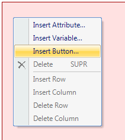
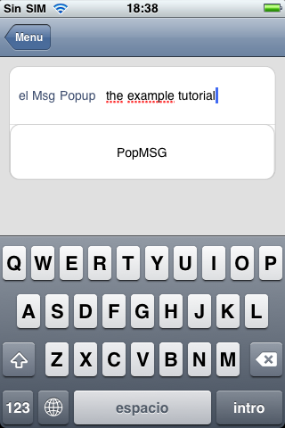

HowTo: Using the Msg method from Interop in Smart Devices API
|
The Interop External Object which can be found under the folder SmartDevicesApi provides several methods to interact with the device where the app is executing.
The Msg method gives the developer the possibility of displaying a message on a pop up window. The user will have to hit Confirm to continue executing the application. This method only receives one parameter and it is the message to be displayed, the type of the parameter as you can see in the picture above is VarChar(200). This article will show an example of how this feature is used. Firstly, create a new Panel object.
Add a variable based on VarChar(200). This variable will let the user enter the message that will be shown on the device. (Make sure the variable has the property Readonly = False). Now add a new Action called PopMSG to the Layout (right click/Insert Action).  On the event of the action (to go to the event of the action: double click on the button) add the following code:
Event 'PopMSG'
Interop.Msg(&elMsgPopup)
EndEvent
Done! The entry panel will accept a message, and when the button is tapped, the text in a message dialogue will be prompt.  As of GeneXus 16 upgrade 9, you can configure the message of the button, for example:
Event 'PopMSG'
Interop.Msg("This is a test", "Ok, thanks")
EndEvent
|


| Backlinks |
| Interop external object |